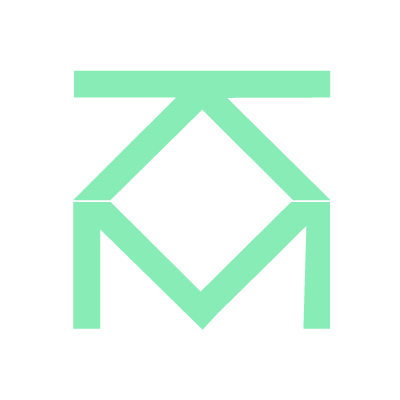
Redesigning a museum's digital experience for the community it actually serves.
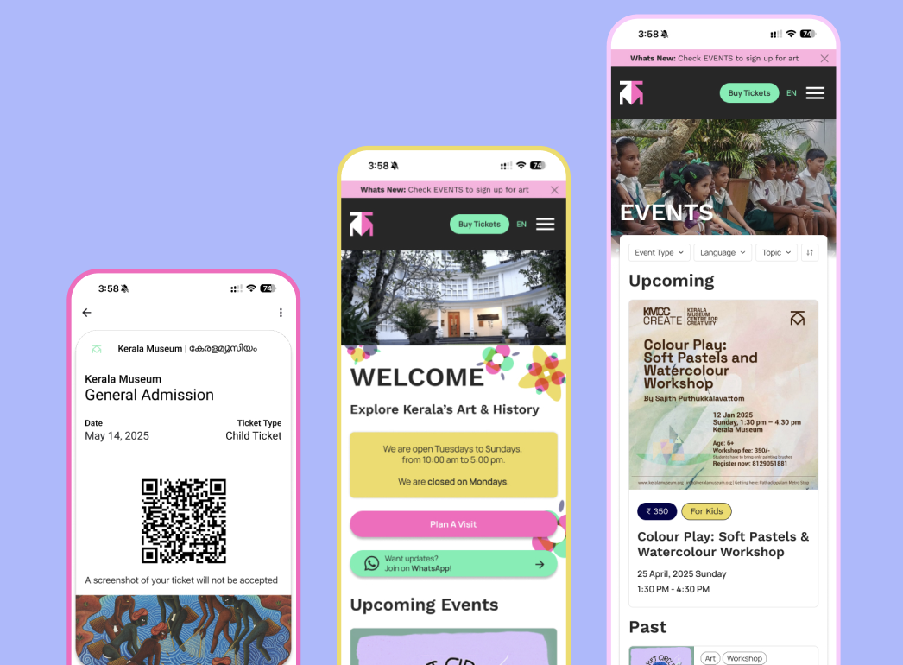
How might we make a local museum feel accessible to everyone who belongs there?
Kerala Museum has been a cultural institution in Kochi, India since 1987. Under new leadership, it's transformed from a tourist attraction into a genuine community hub offering lectures, performances, multi-sensory exhibitions, and events for local families and students.
But the website hadn't kept up. A team of four designers and researchers, including me, partnered directly with the museum to fix that. We were fully remote, none of us had visited in person which meant user research had to do all the heavy lifting.
Kerala Museum is a progressive community center with a voice for the unvoiced.
— Community member, user interviewThe site was built for tourists. The museum had become something else entirely.
Being remote meant we couldn't rely on instinct or a quick site visit. So we audited the existing platform carefully and the usabilitygaps were significant.
- Community members bypassed the site entirely. They asked staff directly, or caught updates on social media. The website wasn't a resource for the community.
- Accessibility and inclusion were missing. Inconsistent language, no local language support (despite serving a Malayalam speaking community), and a structure that made it hard to find anything.
- Navigation was overloaded. Subcategories upon subcategories. Core actions like buying tickets or finding events were buried.
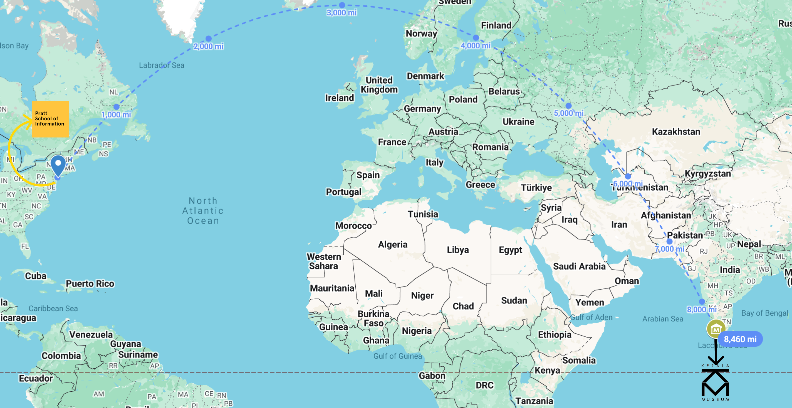
With over 8,000 miles between the design team and Kerala Museum we had to rely on user stories to understand the community needsKerala Museum is culturally rich and locally beloved, but its digital presence was speaking the wrong language. The redesign had to honor the museum's authentic, expressive identity while making every page feel like it was built for the community, not just described to outsiders.
We couldn't visit so we interviewed, benchmarked, and tested everything.
Our research approach was deliberately thorough. Interviews with local users and museum staff gave us ground truth. Benchmarking 13 cultural institutions showed us what good looks like. Tree testing validated whether our proposed information architecture actually made sense to real users.
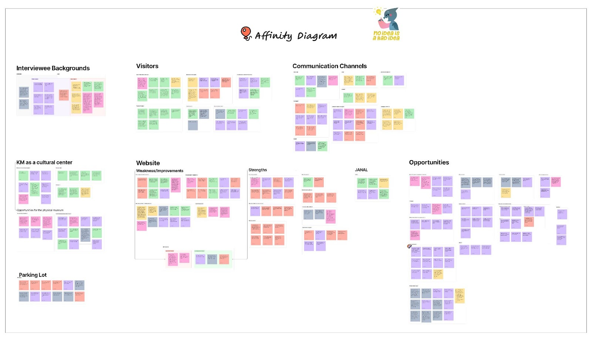
Affinity mapping across all interviews and grouping pain points, motivations, and unmet needs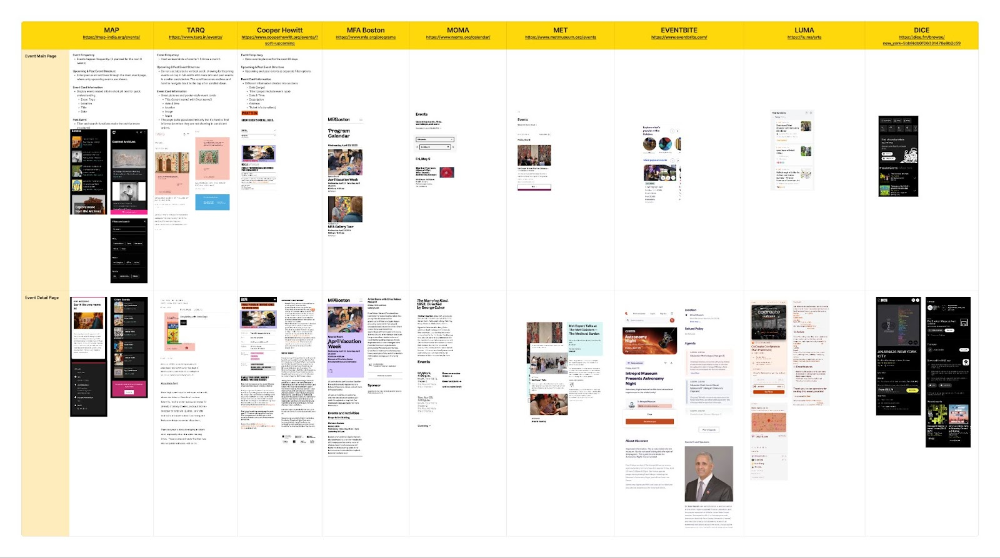
Benchmarking 13 museums, from National Museum of New Delhi to Kochi-Muziris Biennale, to understand what engagement actually looks like Full competitive analysis across accessibility, digital strategy, and community engagement
Full competitive analysis across accessibility, digital strategy, and community engagement
Who we were designing for
The museum's audience is wider than it appears. We identified four distinct user groups with different needs and motivations:
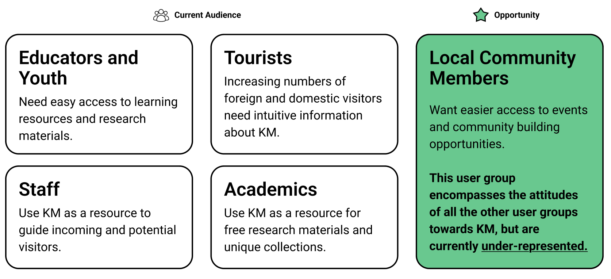
Four current target audiences revealed an opportunity to represent the local community more through the websiteThree principles to hold everything together.
Rather than jumping straight to screens, we defined three design principles from our research. Every decision after that was a question of which principle it served.
1. Foster digital community engagement
Enhance discovery and community storytelling. Help users find what they didn't know they were looking for.
2. Ensure accessible communication
Enable accessible communication and event interaction. Remove the barriers that were making people ask staff instead.
3. Provide a seamless and intuitive experience
Simplify navigation and make content intuitive. One clear path to tickets, events, and visits.
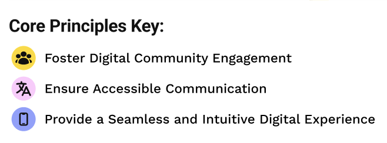
Our core principles informed every screen and helped us understand who it primarily servesSketches & Low-Fi Wireframes
We started with sketches exploring navigation models, event discovery flows, and how to handle the multilingual requirement. Going low-fi early meant we could throw out bad ideas cheaply before they got polished.
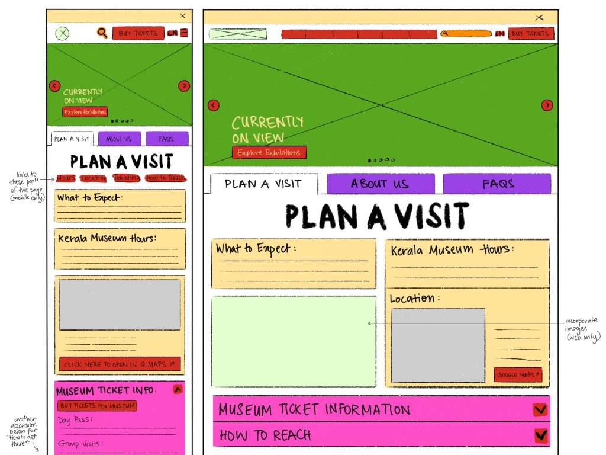
Initial sketches exploring navigation structure and event discovery before touching Figma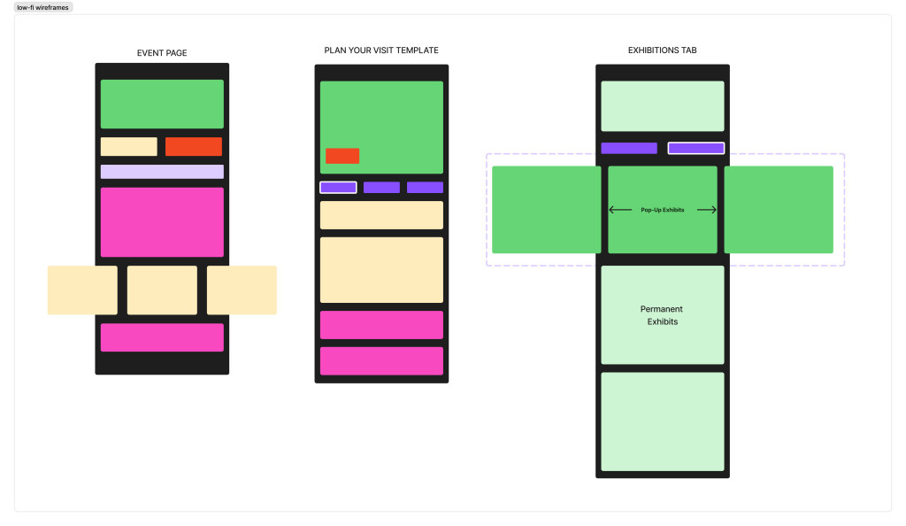
Low-fi wireframes testing information architecture for mobile-first layoutTesting Early and Often
We tested three core flows with seven participants some bilingual in Malayalam and English. The feedback was direct navigation labels were confusing, the FAQ was necessary, and event filters were missing entirely. We iterated before going high-fidelity.
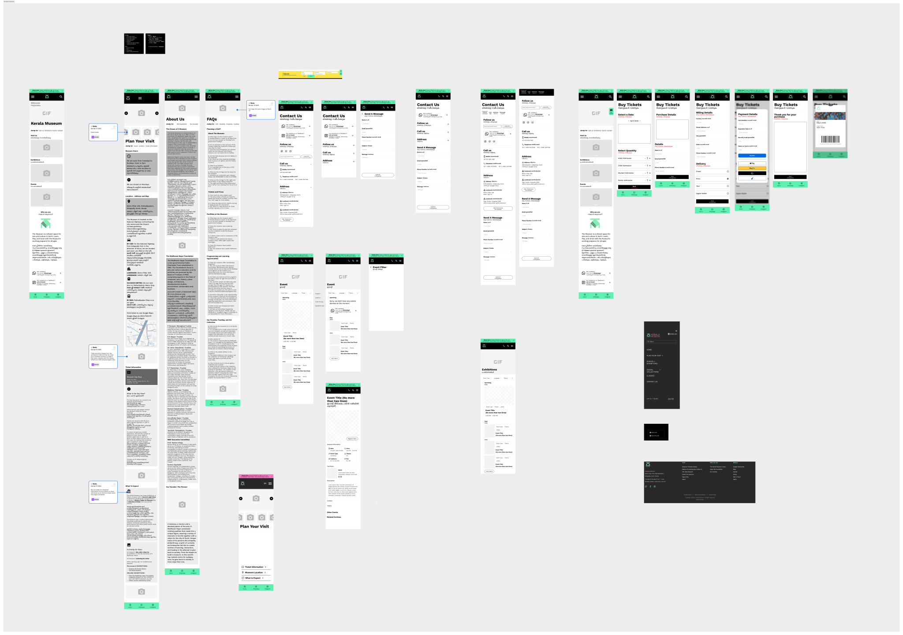
Mid-fidelity after round one of testing with simplified labels, restructured event discovery, and cleaner hierarchy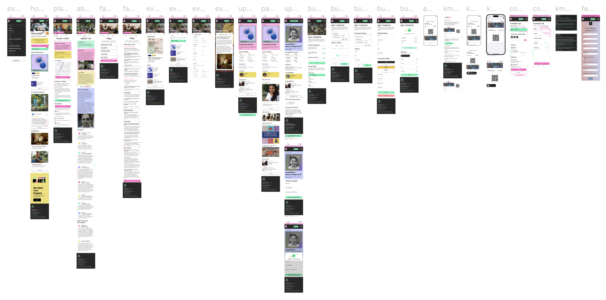
High-fidelity refinements with accessible event filters, streamlined mobile layouts, and bilingual support addedA redesign built to be felt, not just used.
The final design applied our three principles across every core user journey from arriving on the homepage to buying a ticket. Here's what we shipped.
 The redesigned mobile experience is inviting, clear, and easy to use
The redesigned mobile experience is inviting, clear, and easy to use
Homepage
Designed to captivate quickly and orient visitors within seconds whether they're local regulars or first-time discoverers from abroad.
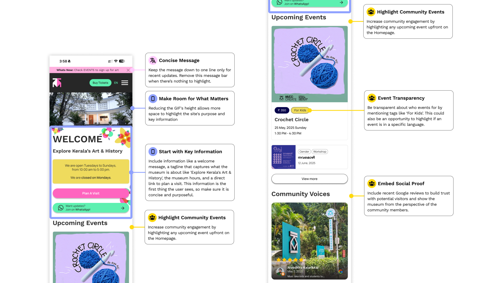
Homepage with engagement zones annotated and navigation cues designed to guide without overwhelmingPlan a Visit
Curated messaging and a clear information flow replaced the old wall of text. Users can understand hours, location, accessibility, and ticketing in a single scroll.
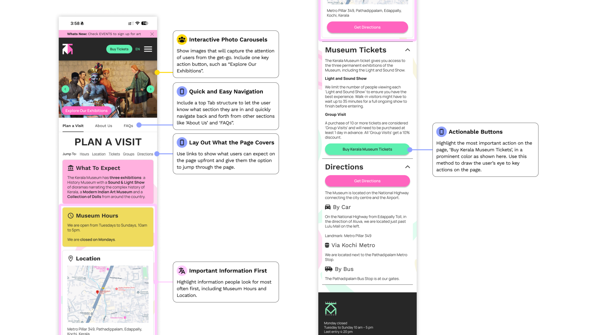
Plan a visit contains strategic information hierarchy with accessibility details surfaced prominentlyEvents
The most requested feature was a proper event filtering system. Users can browse by type, date, and accessibility needs something the old site couldn't do at all.
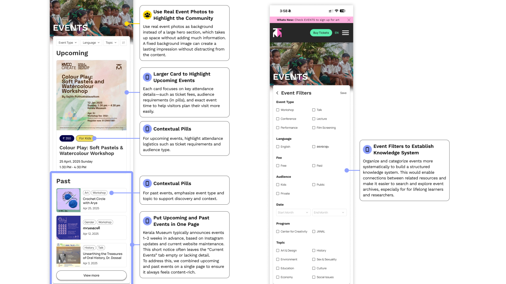
Event discovery with filters for type, date, and accessibility; upcoming and past events separated clearly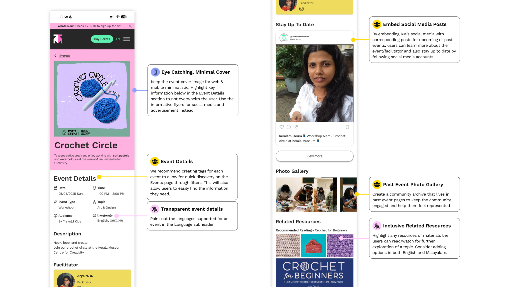
Past events archive that are browsable by year and type for community memory and documentationTicketing
A streamlined checkout flow with clear pricing, accessibility options front and center, and no buried steps.
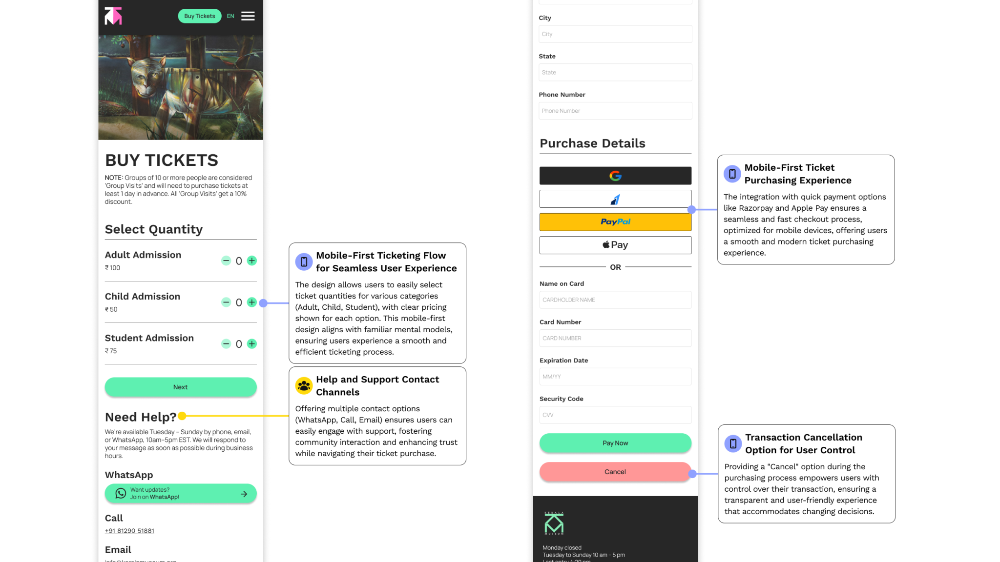
Buy tickets with pricing visible upfront, accessibility options integrated, and minimal steps to complete purchaseUsers noticed the difference immediately.
We ran usability testing on the final designs with participants drawn from our target audience groups. The feedback validated the core decisions and flagged a few things we refined before handoff.
Woah, this site is beautiful! I love the use of colors.
— Participant, usability testingBeyond aesthetics, users found navigation clearer, event discovery faster, and the ticket flow far less confusing than the original. We refined FAQ language, event filter labels, and mobile touch targets based on their input.
Built to grow
The redesign is designed as a flexible framework, not a static mockup. It supports:
- Dynamic event and exhibition updates — the CMS-ready structure makes it easy for staff to publish without technical help.
- Malayalam and English — bilingual support is baked into the information architecture, not added on.
- Social media integration — the platform can pull real-time content from the museum's existing social channels.
- Modular staff tools — curators and administrators can manage content and events without developer involvement.
What I learned
Remote UX means research has to do double duty.
Without the ability to walk through the physical museum or observe visitors in context, every assumption had to be validated through interviews and testing. It made us more rigorous but it also made us more humble about what we didn't know.
Cultural context shapes interface decisions more than aesthetics do.
The color choices, the copy, and the language support weren't just visual decisions. They were statements about who the museum thinks it's for. Getting that right required ongoing conversation with the museum staff and local participants, not just design judgment.
Modular systems make complexity manageable.
A museum's content is inherently complex with events, archives, exhibitions, tickets, multilingual support. Designing with modular components and a clear hierarchy meant the system could handle that complexity without overwhelming any individual page.